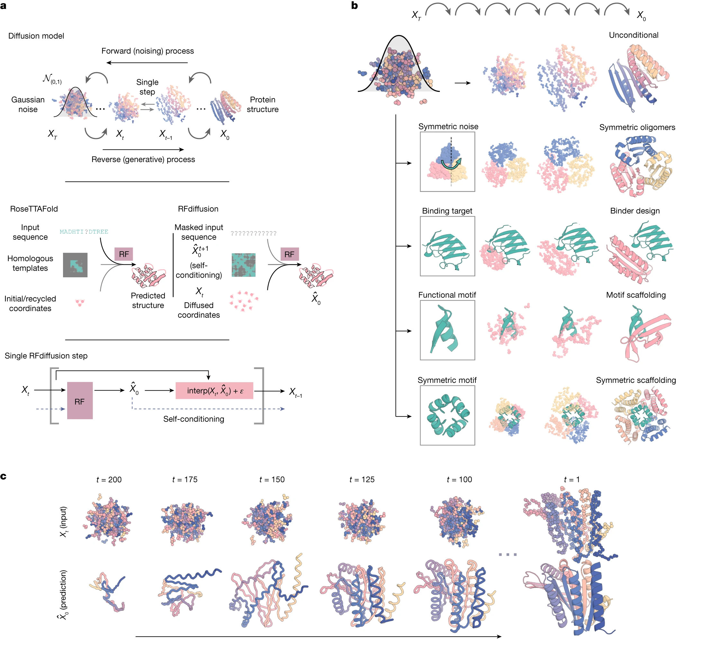
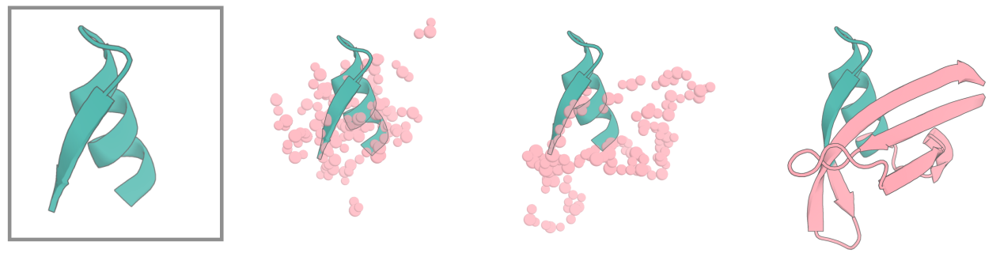
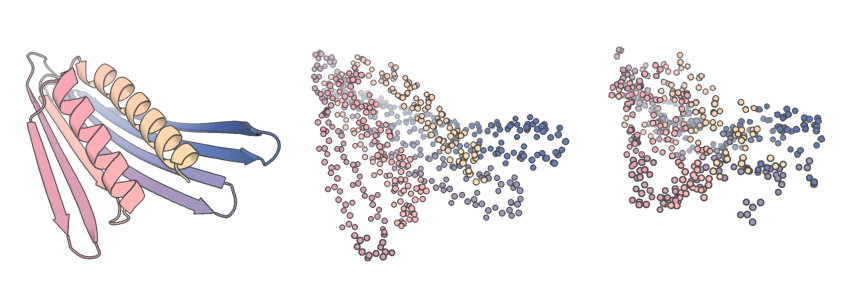
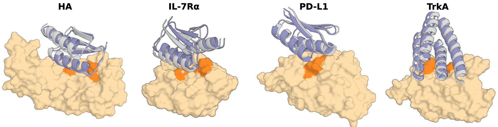
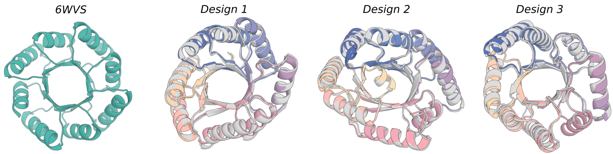

Image: RFdiffusion Paper
一个开源的骨架生成模型，可以基于模板或者无模板生成不包含序列信息的单体蛋白、结合蛋白、同源多聚体蛋白的骨架等 the RFdiffusion paper.
RFdiffusion可以做什么
Sergey Ovchinnikov 提供了一个便于使用的Google Colab Notebook 可以无需安装直接使用。
本地安装可以参考以下步骤：
首先克隆RFdiffusion的内容到本地：
git clone https://github.com/RosettaCommons/RFdiffusion.git
你需要将以下的模型参数文件下载到RFdiffusion目录下.
cd RFdiffusion
mkdir models && cd models
wget http://files.ipd.uw.edu/pub/RFdiffusion/6f5902ac237024bdd0c176cb93063dc4/Base_ckpt.pt
wget http://files.ipd.uw.edu/pub/RFdiffusion/e29311f6f1bf1af907f9ef9f44b8328b/Complex_base_ckpt.pt
wget http://files.ipd.uw.edu/pub/RFdiffusion/60f09a193fb5e5ccdc4980417708dbab/Complex_Fold_base_ckpt.pt
wget http://files.ipd.uw.edu/pub/RFdiffusion/74f51cfb8b440f50d70878e05361d8f0/InpaintSeq_ckpt.pt
wget http://files.ipd.uw.edu/pub/RFdiffusion/76d00716416567174cdb7ca96e208296/InpaintSeq_Fold_ckpt.pt
wget http://files.ipd.uw.edu/pub/RFdiffusion/5532d2e1f3a4738decd58b19d633b3c3/ActiveSite_ckpt.pt
wget http://files.ipd.uw.edu/pub/RFdiffusion/12fc204edeae5b57713c5ad7dcb97d39/Base_epoch8_ckpt.pt
使用 Anaconda 或者 Miniconda 建立python虚拟环境.
以Anaconda为例：
conda env create -f env/SE3nv.yml
conda activate SE3nv
cd env/SE3Transformer
pip install --no-cache-dir -r requirements.txt
python setup.py install
cd ../.. # 切换到安装目录
pip install -e . # 安装模块
当你想要使用RFdiffusion的时候需要激活环境（尽量使用 CUDA 11.1版本）：
conda activate SE3nv
使用之前需要设计提供调用脚本的环境变量:
source ~/.rfdiffusionrc
这个环境变量文件提供了运行脚本的路径，示例如下：
export PATH=$PATH:""
脚本的路径位于 scripts/run_inference.py。 有许多不同的方式可以控制这个脚本的参数，比如通过
Hydra configs 可以非常细致的定义推理过程中的参数，这个默认的控制文件位于 config/inference/base.yaml 。参数文件调用位于run_inference.py脚本的第38行：
@hydra.main(version_base=None, config_path="../config/inference", config_name="base")
以一个100个氨基酸的蛋白质生成为例，我们需要考虑以下内容：
run_inference.py 'contigmap.contigs=[150-150]' inference.output_prefix=test_outputs/test inference.num_designs=10
首先，什么是 contigmap.contigs？
Hydra 配置文件决定了推理脚本如何运行。为了保持结构清晰，配置文件被划分成不同的子配置，其中一个子配置是 contigmap，它与定义构建蛋白的连续字 符串有关。
contigmap:
contigs: null
inpaint_seq: null
provide_seq: null
length: null
配置文件中的任何内容都可以通过命令行手动覆盖。例如：
contigmap.inpaint_seq=[A163-168/A170-171/A179]

我们需要指定如何将特定的蛋白质输入（来自 .pdb 文件的一个或多个片段）进行骨架化，并定义如何连接这些片段以及新骨架蛋白中的残基数量。此外，我们希望能够对连接蛋白的长度进行采样，因为通常我们事先并不知道需要多少残基才能最好地支架化一个基序。这些输入的指定由 contigs 完成，并由 Hydra 配置文件中的 contigmap 配置控制。
run_inference.py inference.output_prefix=example_outputs/design_motifscaffolding_inpaintseq inference.input_pdb=input_pdbs/5TPN.pdb 'contigmap.contigs=[10-40/A163-181/10-40/0]' inference.num_designs=10 'contigmap.inpaint_seq=[A163-168/A170-171/A179]'
.pdb 文件中的链标。例如，A10-25 表示输入 pdb 中链 A 的残基 10 到 25（即，('A',10), ('A',11)... ('A',25)）。/0 指定。inpaint_seq 标签屏蔽残基序列时，可以使用以下语法：
'contigmap.inpaint_seq=[A163-168/A170-171/A179]'
这里我们屏蔽了残基 A163-168, A170-171以及 A179的序列特性。
有时我们可以使用扩散模型对一个结构进行部分的加噪和去噪,从而基于这个起始结构获得更加多样的骨架。可以参考Vazquez-Torres et al., BioRxiv 2022的工作。
我们可以通过 diffuser.partial_T 标签来控制加噪的步数。

run_inference.py inference.output_prefix=example_outputs/design_partialdiffusion inference.input_pdb=input_pdbs/2KL8.pdb 'contigmap.contigs=[79-79]' inference.num_designs=10 diffuser.partial_T=10
RFdiffusion方法默认的扩散步数是50步，如果diffuser.partial_T设置为50意味着完全重新扩散了一个蛋白骨架。
如果想要尝试更大的步数如80，那么需要把diffuser.T设置的更大例如200。这其实和20/50是相同的。
Partial diffusion方法只会产生和输入结构一样长的结果，但是也可以使用contigs控制输入。例如输入一个binder：target复合物，我们对binder（Chain A，100个氨基酸）进行多样化，我们可以使用下面的方式：
'contigmap.contigs=[100-100/0 B1-150]' diffuser.partial_T=20

如果chain B是你的靶点，接下来可以这样做,
run_inference.py 'contigmap.contigs=[B1-100/0 100-100]' inference.output_prefix=test_outputs/binder_test inference.num_designs=10,
这样会靶向chain B 1-100的残基，生成10个长度为100个氨基酸的binder。
随机的生成结合蛋白往往不是我们所期望的结果。
我们通过向模型提供我们所谓的"热点残基"来解决这个问题。指定hotspot：'ppi.hotspot_res=[A30,A33,A34]'
run_inference.py inference.output_prefix=example_outputs/design_ppi inference.input_pdb=input_pdbs/insulin_target.pdb 'contigmap.contigs=[A1-150/0 70-100]' 'ppi.hotspot_res=[A59,A83,A91]' inference.num_designs=10 denoiser.noise_scale_ca=0 denoiser.noise_scale_frame=0
common pitfalls
Selecting a Target Site
Truncating your Target Protein
Picking Hotspots
Binder Design Scale
Sequence Design for Binders
Binder Design Filtering
Fold Conditioning
,

,从PDB结构生成input
./make_secstruc_adj.py --input_pdb ./2KL8.pdb --out_dir /my/dir/for/adj_secstruct
or
./make_secstruc_adj.py --pdb_dir ./pdbs/ --out_dir /my/dir/for/adj_secstruct
可以处理一个PDB或者一个含有多个PDB的文件夹，然后输出二级结构和相邻信息的文件,
./scripts/run_inference.py inference.output_prefix=./scaffold_conditioned_test/test scaffoldguided.scaffoldguided=True scaffoldguided.target_pdb=False scaffoldguided.scaffold_dir=./examples/ppi_scaffolds_subset
另外，对于蛋白-蛋白相互作用：
scaffoldguided.target_pdb=True scaffoldguided.target_path=input_pdbs/insulin_target.pdb inference.output_prefix=insulin_binder/jordi_ss_insulin_noise0_job0 'ppi.hotspot_res=[A59,A83,A91]' scaffoldguided.target_ss=target_folds/insulin_target_ss.pt scaffoldguided.target_adj=target_folds/insulin_target_adj.pt
scaffoldguided.mask_loops=False
在训练过程中会mask一些二级结构和相邻信息，这样可以轻易的加入一些额外的氨基酸，不用管它精确的二级结构，比如，你想生成一个长的3个helix的bundle，可以mask loop然后对这个loop加上比如20额外的'mask' tokens
scaffoldguided.mask_loops=True scaffoldguided.sampled_insertion=15 scaffoldguided.sampled_N=5 scaffoldguided.sampled_C=5
将对最多15个残基进行采样以插入3HB输入的循环中，并在N和C末端最多额外采样5个残基。 在没有大量pdb来创建相邻信息是非常有用。例如，使用这种策略，我们可以从单个起始pdb生成加长的TIM barrel。 最后,如果你有一个大目录的相邻信息/二级结构文件,但不想使用所有这些文件,你可以制作一个你想要使用的.txt文件：
scaffoldguided.scaffold_list=path/to/list
对于蛋白-蛋白相互作用，减少noise可以适当improve design：
denoiser.noise_scale_ca=0.5 denoiser.noise_scale_frame=0.5
另一个例子： ./examples/design_ppi_scaffolded.sh，RFdiffusion设计flexible peptides的binder，提供peptide的pdb结构但mask相应的3D结构：
inference.input_pdb=input_pdbs/tau_peptide.pdb 'contigmap.contigs=[70-100/0 B165-178]' 'contigmap.inpaint_str=[B165-178]'
指定这段结构为beta strand：
scaffoldguided.scaffoldguided=True 'contigmap.inpaint_str_strand=[B165-178]'
在denoising中用辅助potential来guide diffusion，比如让设计的蛋白达到想要的shape，well-packed protein。
potentials.guiding_potentials，有多个：arg_name1:arg_value1,arg_name2:arg_value2,...,arg_nameN:arg_valueNconstant,linear,quadratic,cubic)，potentials.guide_decaypotentials.guiding_potentials=[\\\type:olig_contacts,weight_intra:1,weight_inter:0.1\\\] potentials.olig_intra_all=True potentials.olig_inter_all=True potentials.guide_scale=2 potentials.guide_decay='quadratic'
一开始建议不加potential， 在过程中逐步增加合适的potential。